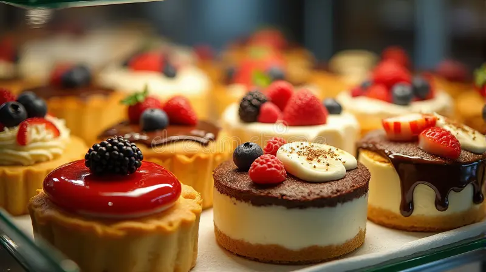
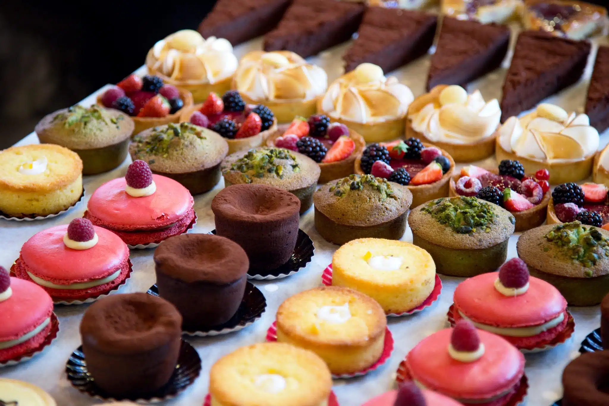

A Lifelong Dream Brewed to Life
Brew & Blossom Cafe is built on a deep, enduring passion for the culinary arts and the warmth of an independent neighborhood bakery. What began as a dream to create a welcoming local gathering space has grown into a boutique sanctuary dedicated to comfort and quality.
Surrounded by botanicals and natural sunlight, our space is designed for meaningful conversations, creative mornings, and a genuine appreciation for slow-crafted hospitality.


Artisan Pastries & Decadent Desserts
Our bakers arrive before dawn every single day, working with pure butter, rich chocolate, fresh fruits, and fine ingredients to bake everything entirely from scratch.
From flaky croissants to rich signature tiramisu slices and custom-glazed cakes, every treat is crafted to offer a touch of boutique elegance in every single bite. Taste the difference that true dedication makes.